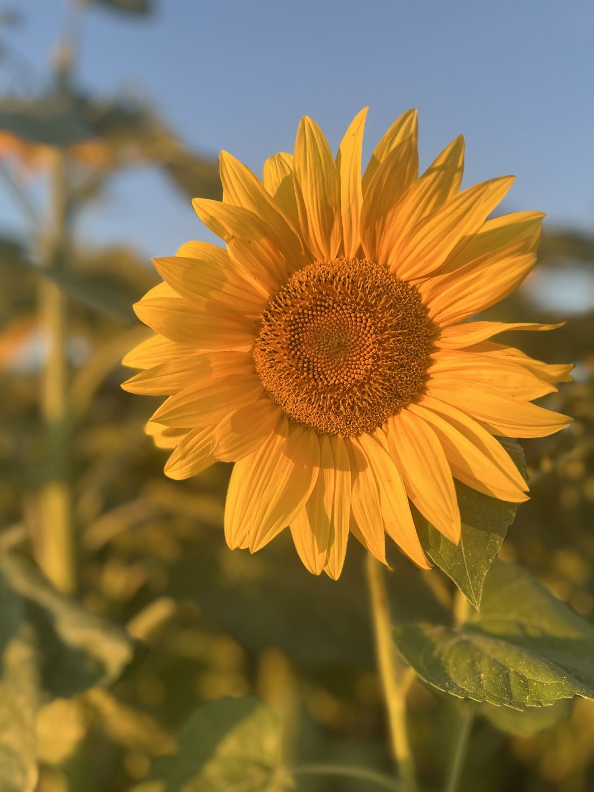
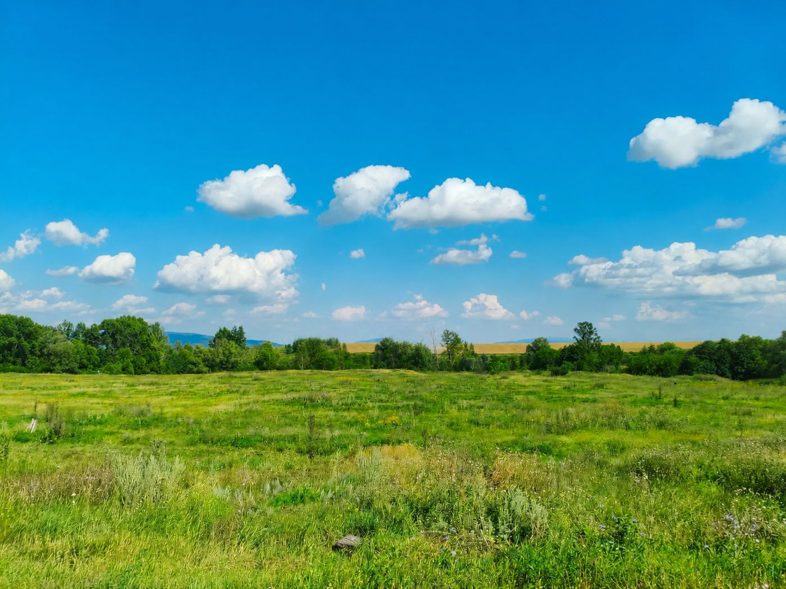
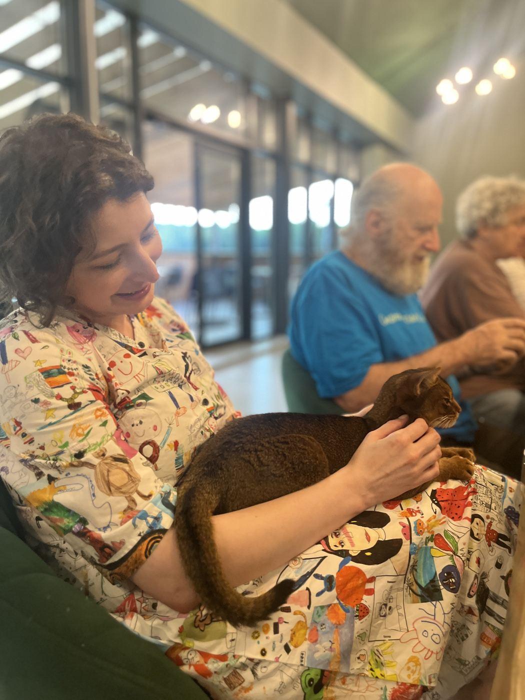

01
Кумертау ДСО «Южный»

Смотреть внимательнее. Обсуждать честно. Менять конкретно.

Несколько дней,
шесть организаций,
много разговоров на месте,
большой семинар —
и ещё один отдельный разговор
в конце поездки.
Не просто посмотреть учреждение,
а увидеть,
как устроена
повседневная жизнь человека.





Как человек лежит, сидит, перемещается и получает помощь.
Пищевой статус, организация питания, помощь при кормлении и доступ к воде.
Возможность сообщать о выборе, просьбе и отказе.
Навигация, пространство, личные вещи и приватность.
Терапия, наблюдение, качество жизни и социальное функционирование.
Что происходит в течение дня и остаётся ли человек участником своей жизни.
Разбирать реальные ситуации и искать действия, которые можно перенести в ежедневную работу.
Интерактивные разборы, практические задания, работа с кейсами и обсуждение решений между специалистами разных профилей.
Атмосфера отделения, внешний вид жителей, документация, кормление, занятость, коммуникация, навигация и безопасность.
Т.А. Портнягина · Л. Андрев

Оценка пищевого статуса, раннее выявление риска, лечебное питание и нутритивная поддержка.
Ю.Р. Вараева · А.Л. Битова

Практические кейсы, средства альтернативной и дополнительной коммуникации и визуальные опоры.
О.В. Караневская

Современные способы лечения, эффективная и безопасная терапия, качество жизни и социальное функционирование.
Н.В. Соловьева

Один случай рассматривается с разных позиций. Задача — увидеть не только ответственность, но и ресурсы помощи.


Вопрос не только в том, что есть в учреждении. Вопрос — что из этого каждый день получает конкретный человек.
После мониторинга и большого семинара состоялась ещё одна встреча — отдельный разговор с родителями.


Ещё один голос, который важно не потерять в разговоре об изменениях.

На месте важны детали. Но не меньше важно обсуждать увиденное вместе: с коллегами, сотрудниками организаций, руководителями и специалистами региона.


Дорога, разговоры после визитов, красивые места и короткие паузы — тоже часть этой истории.
Итоги экспертных визитов — это не финальная точка, а материал для следующих решений.
Республика Башкортостан · август 2026